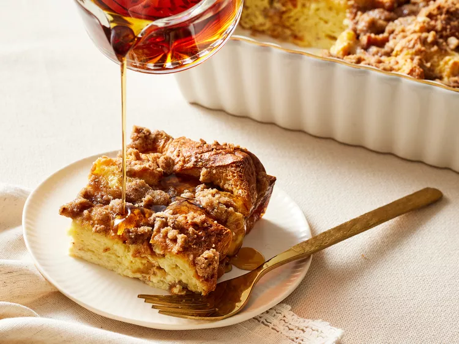
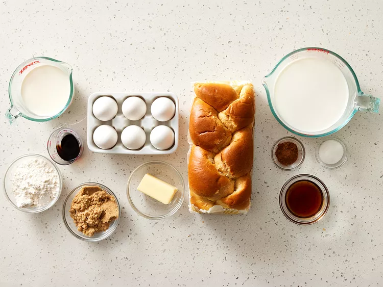
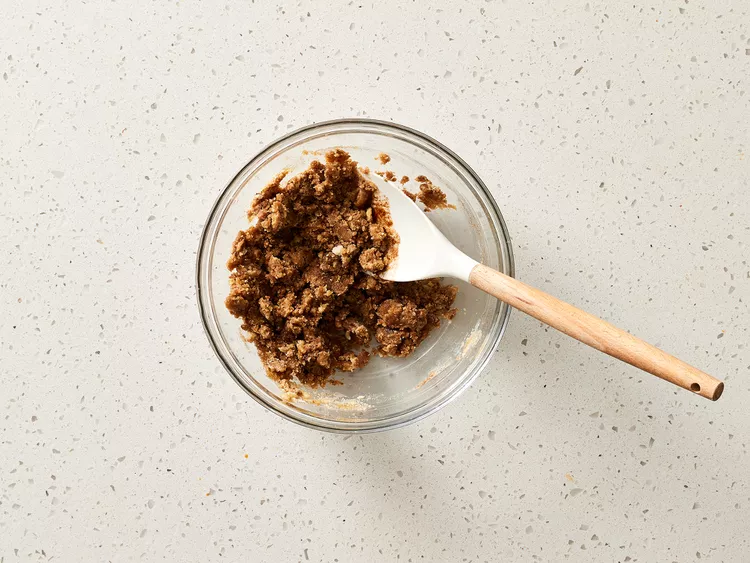
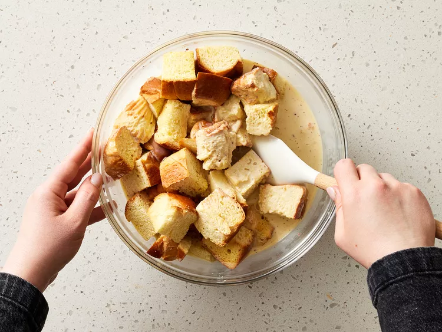
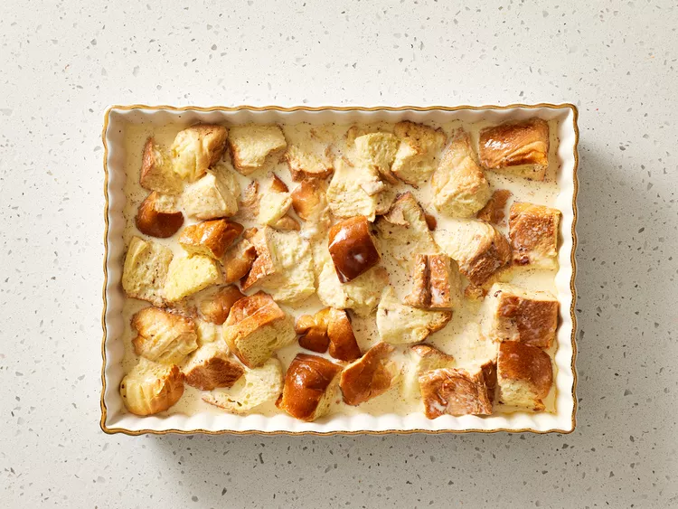
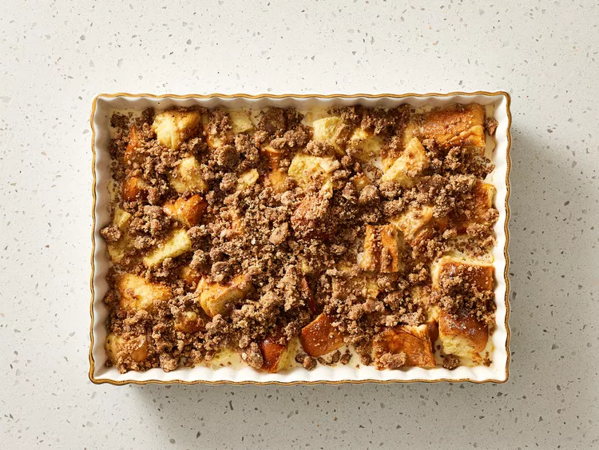

French Toast Casserole

Description
Use brioche to make French toast casserole for a special treat.
Brioche bread is very fluffy and rich, so it absorbs the milk and eggs very well but still keeps its distinct flavor.
The cinnamon strusel on top falls into the crevices of the bread, making every bite sweet and crunchy.
Ingredients
- 1/2 cup packed light brown sugar
- 1/2 cup all purpose flower
- 1/4 cup unsalted butter, melted
- 1/4 teaspoon kosher salt
- 2 teaspoons ground cinnamon
- cooking spray
- 2 cups whole milk
- 1 cup heavy whipping cream
- 6 large eggs
- 2 tablespoons pure maple syrup
- 1 1/2 tablespoons vanilla extract
- 16 ounce brioche loaf, cut into 1 inch cubes
- 2 teaspoons granulated sugar
Directions
- Gather all ingredients. Preheat the oven to 350 degrees F (175 degrees C).

- Stir together brown sugar, flour, melted butter, salt, and 1/2 teaspoon of the cinnamon in a medium bowl until crumbly; set aside.

- Lightly coat a 9-x 13-inch baking dish with cooking spray.
Whisk together milk, heavy cream, eggs, maple syrup, vanilla, and remaining 1 1/2 teaspoons cinnamon in a large bowl until fully combined.
Toss cubed brioche in milk mixture until all pieces are moistened. Milk mixture will not be completely absorbed.

- Transfer mixture to prepared baking dish, and sprinkle evenly with granulated sugar.

- Bake in preheated oven until casserole is set and bread is golden brown and puffy, 35 to 40 minutes.
Remove from oven, and serve immediately with additional maple syrup.

Back to Home